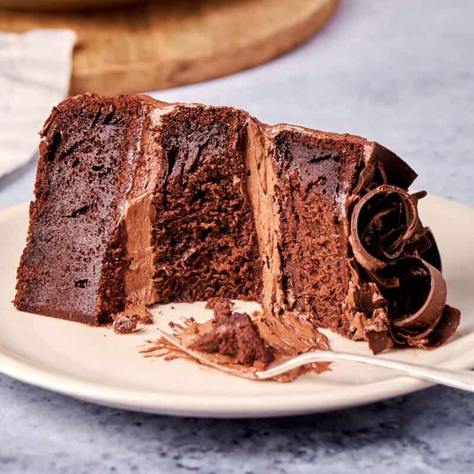

Healty Chocolate Cake

Description
Hands down, this is the healthiest chocolate cake recipe on this planet! Moist and with a tender crumb, this healthy cake is sugar free, fat free, and low calorie- but you’d never tell- Less than 100 calories a slice.
Ingredients
- All purpose flour– An affordable and simple flour. If you’d like to boost the healthiness of it, you can use white wholewheat all purpose flour. To keep this healthy cake gluten free, use gluten free flour.
- Granulated sweetener– Any sugar free and calorie free granulated sweetener will work. I prefer using monk fruit sweetener or erythritol.
- Cocoa Powder– Use a good quality cocoa powder, and sift it first to ensure there are no clumps. For a richer chocolate cake, use dark cocoa powder.
- Baking soda– Gives the cake some rise and leavening.
- Salt– Enhances the sweetness of the cake.
- Apple Cider Vinegar– Works with the baking soda so that you don’t need to use eggs. You can also use white vinegar or even lemon juice.
- Vanilla Extract– A must for any cake or baked good.
- Unsweetened applesauce– Applesauce replaces the need for any fat
- Water– Instead of using milk or non dairy milk, we use water. Use room temperature water, not warm or hot.
Steps
- Start by mixing together your dry ingredients in a large mixing bowl.
- Next, add your apple cider vinegar, vanilla extract, and unsweetened applesauce and mix until just combined.
- Then, add your water and mix very well, until fully incorporated.
- Transfer the cake batter into a cake pan and bake for 25-30 minutes, or until a skewer comes out ‘just’ clean.
- Let cool in the pan for 10 minutes, before transferring to a wire rack to cool completely.
- Once cool, frost the cake.